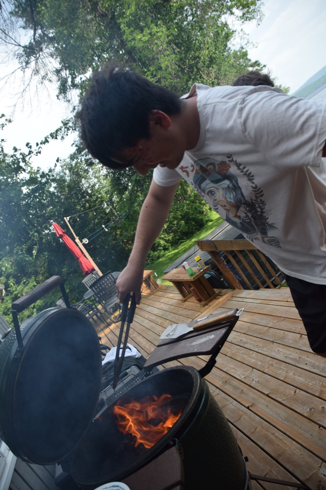

Co-founder
Amir Laghai
Born and raised in Mississauga, Amir studied Engineering Physics at Carleton University with a minor in Physics. He continued at Carleton with a master's in Biomedical Engineering, specializing in Data Science, and has worked with the Sam3 AGE-WELL Lab on aging-care projects, including a non-invasive system for detecting dementia.